نوع داده dictionary شبیه دفترچه تلفن است که هر نام با یک شمارهتلفن مرتبط است.
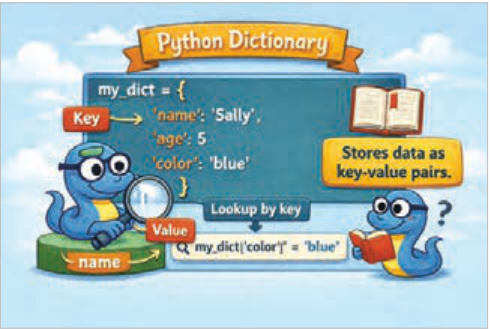
دیکشنریها از تعدادی جفت کلید:
مقدار (key:value) تشکیل شدهاند که به هر یک از آنها item گفته میشود. هر کلید به یک مقدار خاص اشاره دارد.
برای ایجاد dictionary آیتمها درون {} قرار گرفته و با کاما از یکدیگر جدا میشوند. همچنین هر کلید و مقدار آن با علامت دونقطه از هم جدا شده است.
شکل 104
در مثال شکل105 یک dictionary شامل سه آیتم (کلید و مقدار) به نام cardic تعریف شده است:
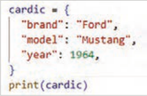
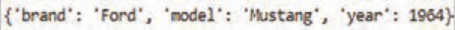
شکل 105
برای دسترسی به یک مقدار در dictionary بعد از نام dictionary، کلید، داخل براکت [] قرار داده میشود (شکل106).
مثال: در کد شکل106 یک دیکشنری به نام person با 3 آیتم (کلید، مقدار) تعریف شده است. برای نمایش هر یک از عناصر داخل این دیکشنری از براکت [] استفاده شده است.
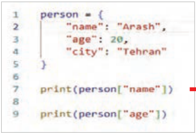
شکل 106
صفحه ۵۳
نکته
اگر هر عنصر دارای عنوان مشخص باشد (مانند نام دانشآموز و نمره او)، استفاده از دیکشنری بهتر از لیست است؛ زیرا در دیکشنری میتوان مستقیمًا با نام کلید به مقدار معادل آن دسترسی داشت و نیازی به دانستن اندیس عنصر نیست.
فعالیت
یک دیکشنری به نام book بسازید که اطلاعات یک کتاب را نگه دارد:
نام نویسنده (author) و تعداد صفحات (pages) را چاپ کنید.
کلیدهای متفاوت میتواند مقادیر یکسان داشته باشند.
مثال: دیکشنری status دارای دو آیتم است (شکل107).
آیتم اول: "user1":"active"
آیتم دوم: "user2":"active" کلیدها یکسان هستند ولی مقادیر هریک از آنها متفاوت است.
در dictionary کلیدهای یکسان نمیتوانند مقادیر یکسان داشته باشند. کلیدهای تکراری باعث بازنویسی مقدار قبلی میشوند، نه مقدارهای تکراری.
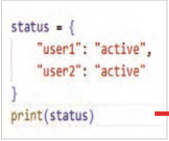
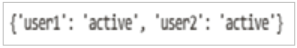
شکل 107
در مثال شکل 108 دیکشنری car_dic دارای پنج آیتم است که دو تای آنها دارای کلیدهای با نام یکسان هستند. پس مقدار جدید به جای مقدار قبلی جایگزین میشود.
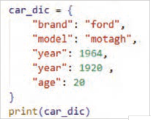
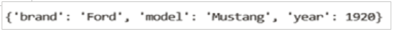
شکل 108
صفحه ۵۴
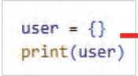
برای ساخت یک dictionary خالی از {} استفاده میشود (شکل109).
مثال: یک دیکشنری خالی با نام user تعریف شده است.
شکل 109
اضافهکردن item جدید به dictionary:
برای اضافهکردن یک عضو جدید به dictionary در پایتون، کافی است یک کلید جدید را مقداردهی کنید (شکل110).
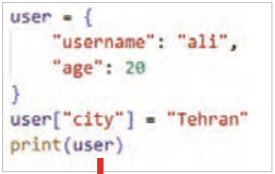
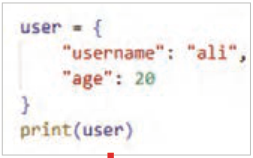
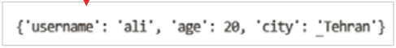
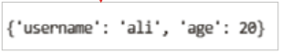
شکل 110
فعالیت
یک dictionary به نام product با کلیدهای nameprice ، بسازید. قیمت محصول درون dictionary را تغییر دهید و سپس dictionary را چاپ کنید.
مثال: یک dictionary خالی به نام student بسازید. سپس با استفاده از ورودی name و grade را به dictionary اضافه و در پایان دیکشنری را چاپ کنید (شکل111).
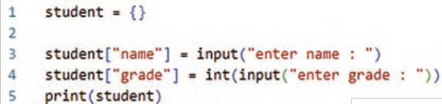
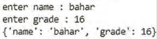
شکل 111
فعالیت
یک dictionary خالی به نام user بسازید. از ورودی مقادیری برای کلیدهای username و password و Age را بگیرید و داخل dictionary ذخیره و در پایان کل اطلاعات کاربر را چاپ کنید.
صفحه ۵۵
حذف عنصر از dictionary:
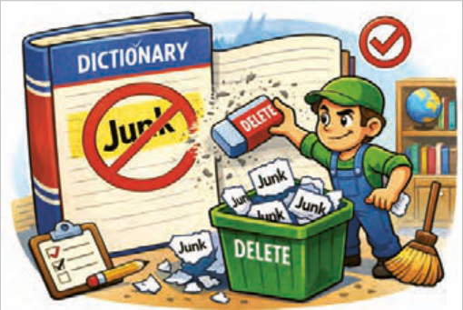
روشهای مختلفی برای حذف آیتم از dictionary وجود دارد ازآنجمله:
در پایتون برای حذف یک آیتم از dictionary، از دستور del استفاده میشود. با این دستور، کلید و مقدار مربوط به آن به طور کامل از dictionary حذف میشود.
شکل 112
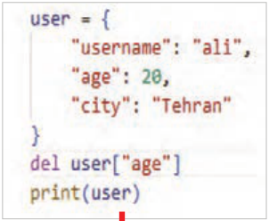
مثال: در مثال کلید age و مقدار آن 20، از dictionary حذف شده است. برنامه را بنویسید و نتیجه را مشاهده کنید (شکل113).
در برنامه مقابل برای حذف آیتم age": 20" از دستور del استفاده شده است. مشاهده میکنید که با این دستور کلید و مقدار آن حذف شدهاند.
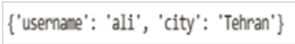
شکل 113
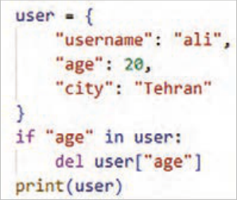
درصورتیکه قصد حذف کلیدی را دارید که در dictionary وجود نداشته باشد، برنامه با خطا مواجه میشود؛ بنابراین قبل از حذف، باید وجود کلید بررسی شود. در برنامه مقابل برای جلوگیری از خطا پیش از حذف عنصر از لیست، وجود آن بررسی شده است.
برنامه را وارد کرده و نتیجه را مشاهده کنید (شکل114).
شکل 114
صفحه ۵۶
برای حذف عنصر از dictionary میتوانید از متد pop() نیز استفاده کنید. متد pop()، عنصری که نام کلید مشخص شده را دارد، حذف میکند. (key)dictionary.pop مثال: در کد (شکل115) عنصر "price " از دیکشنری product با استفاده از دستور product.pop("price") حذف شده است.
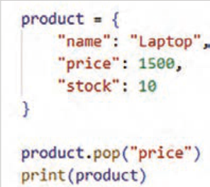
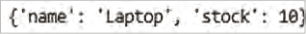
شکل 115
متد ()pop علاوه بر حذف آیتم، میتواند مقدار آیتم حذفشده را برگرداند (شکل116).
وجود کالایی با نام "Bag" را بررسی و در صورت وجود، پیغام مناسبی چاپ شود که نشاندهندۀ وجود کالا باشد و سپس آن آیتم را با متد ()pop حذف کنید.
مقدار حذفشده را چاپ کنید.
اگر کالا وجود نداشت، پیغامی مبنی بر عدم وجود آن نمایش داده شود.
سپس dictionary جدید را چاپ کنید.
Page 52
Dictionary (dictionary)
The dictionary data type is like a phone book in which each name is associated with a phone number.
Dictionaries are made up of a number of key:
value (key:value) pairs, each of which is called an item. Each key points to a specific value.
To create a dictionary, the items are placed inside {} and separated from each other by commas. Also, each key and its value are separated by a colon.
Figure 104
In the example in Figure 105, a dictionary named cardic containing three items (key and value) is defined:
Figure 105
To access a value in a dictionary, after the dictionary name, the key is placed inside brackets [] (Figure 106).
Example: In the code in Figure 106, a dictionary named person with 3 items (key, value) is defined. Brackets [] are used to display each of the elements inside this dictionary.
Figure 106
Page 53
Note
If each element has a clear label (such as a student’s name and score), using a dictionary is better than a list, because in a dictionary you can access the matching value directly by the key name and you do not need to know the element’s index.
Activity
Build a dictionary named book that holds information about a book:
Print the author’s name (author) and the number of pages (pages).
Different keys can have the same values.
Example: The status dictionary has two items (Figure 107).
آیتم اول: "user1":"active"
Second item: "user2":"active" The keys are the same, but the values of each of them are different.
In a dictionary, identical keys cannot have identical values. Duplicate keys cause the previous value to be overwritten, not duplicate values.
Figure 107
In the example in Figure 108, the car_dic dictionary has five items, two of which have keys with the same name. So the new value replaces the previous value.
Figure 108
Page 54
To build an empty dictionary, {} is used (Figure 109).
Example: An empty dictionary named user is defined.
Figure 109
Adding a new item to a dictionary:
To add a new member to a dictionary in Python, it is enough to assign a value to a new key (Figure 110).
Figure 110
Activity
Build a dictionary named product with the keys nameprice . Change the product’s price inside the dictionary and then print the dictionary.
Example: Build an empty dictionary named student. Then, using input, add name and grade to the dictionary and finally print the dictionary (Figure 111).
Figure 111
Activity
Build an empty dictionary named user. Take values for the keys username and password and Age from input, store them inside the dictionary, and finally print all of the user’s information.
Page 55
Removing an element from a dictionary:
There are various ways to remove an item from a dictionary, including:
In Python, the del statement is used to remove an item from a dictionary. With this statement, the key and its related value are completely removed from the dictionary.
Figure 112
Example: In the example, the key age and its value 20 have been removed from the dictionary. Write the program and observe the result (Figure 113).
In the program opposite, the del statement is used to remove the item age": 20". You can see that with this statement the key and its value have been removed.
Figure 113
If you intend to remove a key that does not exist in the dictionary, the program encounters an error; therefore, before removing, the existence of the key must be checked. In the program opposite, to prevent an error, the existence of the element is checked before removing it from the list.
Enter the program and observe the result (Figure 114).
Figure 114
Page 56
To remove an element from a dictionary, you can also use the pop() method. The pop() method removes the element that has the specified key name. (key)dictionary.pop Example: In the code (Figure 115), the element "price " has been removed from the product dictionary using the statement product.pop("price").
Figure 115
In addition to removing the item, the ()pop method can also return the value of the removed item (Figure 116).
Check whether an item named "Bag" exists and, if it does, print a suitable message indicating that the item exists, and then remove that item with the ()pop method.
Print the removed value.
If the item did not exist, display a message stating that it does not exist.